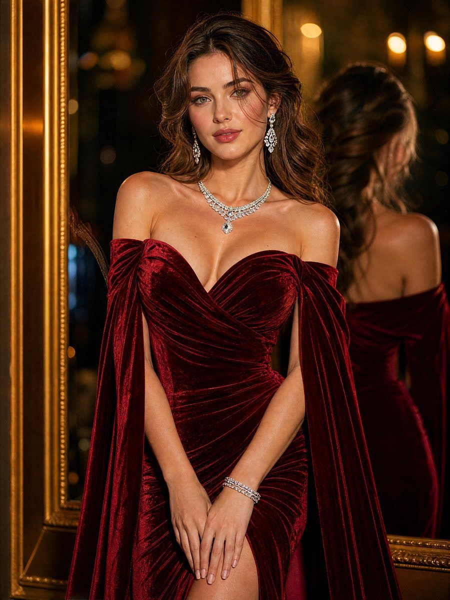

Luxury Ruby Red Velvet Evening Gown Portrait
WRD-009WardrobeGPT Image 2by TaliaOctober 11

A prompt for creating a stunning ultra-realistic luxury fashion editorial portrait of a woman wearing a deep ruby-red velvet evening gown in an elegant ballroom setting.
Prompt
A stunning ultra-realistic 8K luxury fashion editorial portrait of an elegant adult woman with long, voluminous chestnut-brown waves, soft face-framing strands, luminous fair skin, hazel-green eyes, delicate facial features, and glossy rose-pink lips, wearing an exquisite deep ruby-red velvet evening gown featuring a sculpted sweetheart neckline, intricate pleated draping across the bodice, an off-the-shoulder design, flowing floor-length fabric, and dramatic cape-like sleeves cascading elegantly from her arms, paired with a sparkling diamond statement necklace, matching chandelier earrings, and a luxurious diamond bracelet. She poses gracefully with her hands resting delicately near her thigh, gazing directly into the camera with a confident, soft expression. The setting is an elegant upscale ballroom with a dark, warm-toned background, golden ambient lights, and a subtle mirror reflection behind her, creating a glamorous red-carpet atmosphere. Professional luxury fashion photography, cinematic warm lighting, soft highlights on the skin, realistic velvet texture, intricate fabric details, natural body proportions, shallow depth of field, 85mm portrait lens, crisp facial focus, sophisticated color grading, photorealistic skin texture, high-end magazine cover aesthetic, vertical 9:16 composition.
Tags: 35mm film, fashion, portrait, 9:16 vertical